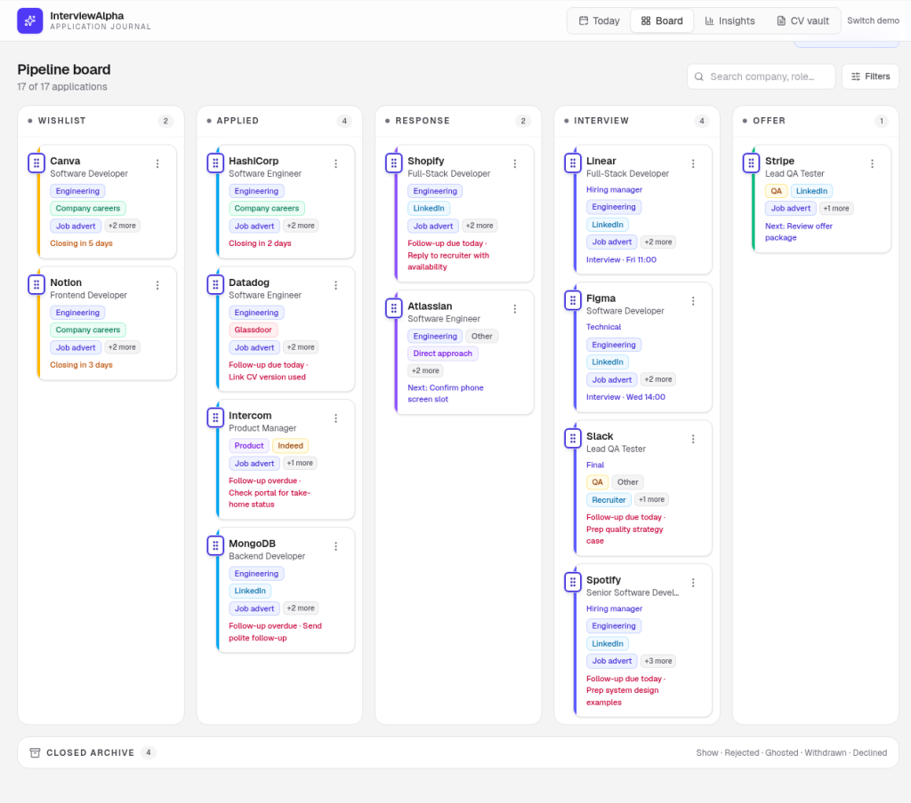
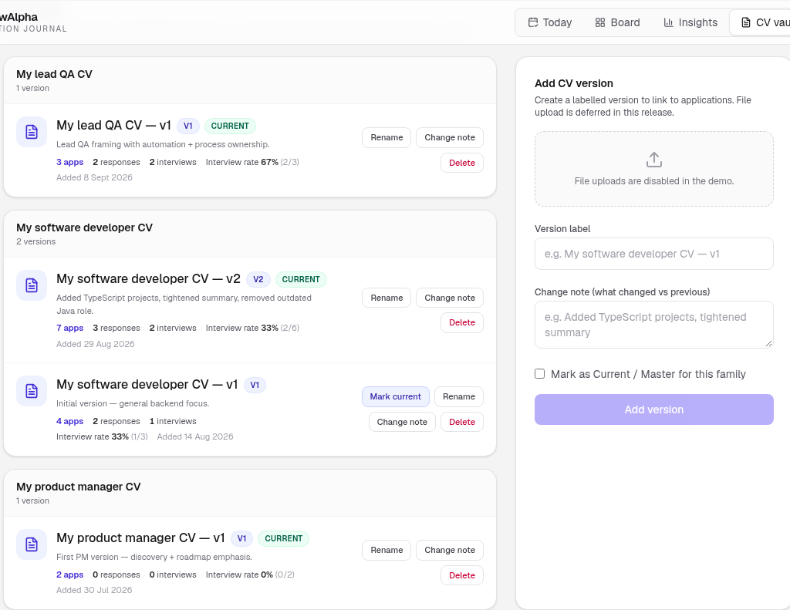

How to track job applications without a spreadsheet
Spreadsheets feel organised until they aren't. You start with tidy columns (company, role, date applied) then add a "notes" cell, a colour code, a half-finished "follow up?" column. Two weeks later you have three tabs, a lost row, and no clear sense of what to do next.
You don't need a denser spreadsheet. You need a simpler system: one place for every application, a visible next step, and enough structure that nothing sits forgotten.
Why spreadsheets quietly fail job searches
Spreadsheets are great for lists. Job searches are not only lists. They are pipelines with stages, versions, and follow-ups that change over time.
Common failure modes:
- Rows without next actions. "Applied" tells you history, not what to do on Tuesday.
- Version fog. You can't remember which CV went to which role.
- Silent stalls. Applications age out of your attention with no visual cue.
- Multiple sources of truth. LinkedIn messages, email, a Notes app, and the sheet all disagree.
- False productivity. Formatting the sheet feels like progress while follow-ups slip.
Organisation alone isn't enough. You also need a next step and a light feedback loop so you can see what's working, which approaches earn interviews, not only how many applications you sent.
A pipeline system (instead of endless columns)
Think of each opportunity as a card that moves through stages (Wishlist, Applied, Response, Interview, Offer (with a closed archive)) rather than a row you endlessly edit.

A useful pipeline usually includes:
- Company and role (clear labels beat clever formulas)
- Stage (where it sits right now)
- Date applied (or date last touched)
- CV version used
- Source (LinkedIn, careers page, referral, agency)
- Next step + date (the one action that moves it forward)
- Short notes (interviewers' names, what you sent, anything you'd forget)
That's enough. Extra columns tend to become guilt, not clarity. If a field doesn't help you decide or follow up, leave it out.
Stages that stay honest
Keep stages few and meaningful. For example:
- Wishlist / researching
- Applied
- Response / screening
- Interview
- Offer / closed (include rejections and withdrawn roles so the board stays truthful)
Move cards when reality changes. Don't invent stages for every email. "Recruiter liked my LinkedIn comment" is a note, not a new column of the pipeline.
Capture once, update lightly
The spreadsheet trap is over-logging. Aim for capture at apply time, then light updates when something happens.
When you apply:
- Add the role the same day (same hour if you can)
- Tag the CV version you used
- Write one next step ("Follow up if no reply in 10 days")
- Note the source so later patterns make sense
When something moves:
- Change the stage
- Refresh the next step
- Add a one-line note if it helps you later
If an opportunity dies, close it. A clean closed area is kinder than a graveyard of "maybe still open?" rows. Closed roles also keep your weekly review honest: you see throughput, not an ever-growing "active" pile.
What "organised" should feel like
A good tracker answers three questions in under a minute:
- Where is everything? (visual stages beat scrolling)
- What should I do next? (one action per live opportunity)
- What's working? (patterns across CV versions and approaches, not just volume)
That third question is where many sheets fall down. Counting applications is easy. Seeing interview rates by CV version needs denominators, not vibes. If your tracker can't show you that without a weekend of pivot tables, the tool is fighting you.
A note on volume tools
Avoid systems that push spray-applying, autofill spam, or "AI resume factories." Volume without a feedback loop usually means more noise, more ghosting, and less learning. What matters more than volume tools: organisation + next step + personal feedback loop.
Spreadsheet alternatives that stay calm
You have options. Choose for clarity, not novelty:
- A dedicated application board: cards and stages, notes attached, CV versions linked
- A lightweight CRM mindset: treat roles like opportunities with owners (you) and next actions
- A weekly review habit: even a good tool fails without a short pause to clean and prioritise
Paper can work for a handful of roles. Beyond that, something visual and stage-based tends to spare your working memory.
A simple setup you can start today
- List every live application (include the awkward half-finished ones).
- Put each into a stage. Be honest about stalls.
- Attach the CV version you used, even if the label is rough ("developer CV v2").

- Write one next step for anything still open.
- Set a 15-minute weekly review so the board doesn't rot.
- After two weeks, glance at interview rate by version, even a rough table helps.
If you prefer to try this shape before rebuilding your process from scratch, InterviewAlpha's interactive demo lets you explore a pipeline board, CV vault, and interview-rate insights, no sign-up required. Your data stays in the demo workspace with a local-storage framing on the current site; nothing is presented as a recruiter-facing share feed. A fuller product is on the way; the demo is there to show the calm workspace first.
Keep the system small enough to trust
The goal is not a perfect database. It's a place that reduces job-hunt chaos: you know what's in flight, what to do next, and which approaches deserve another look.
When the tracker is easier to trust than your memory, you're in good shape. Build for the Tuesday afternoon version of yourself, the one who has twenty minutes, not the Sunday-night version who wants a colour-coded masterpiece.